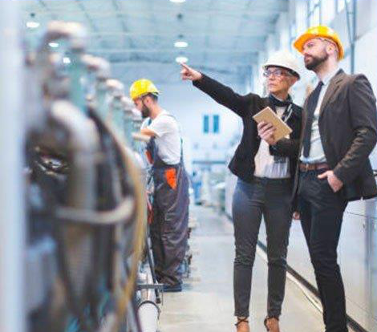
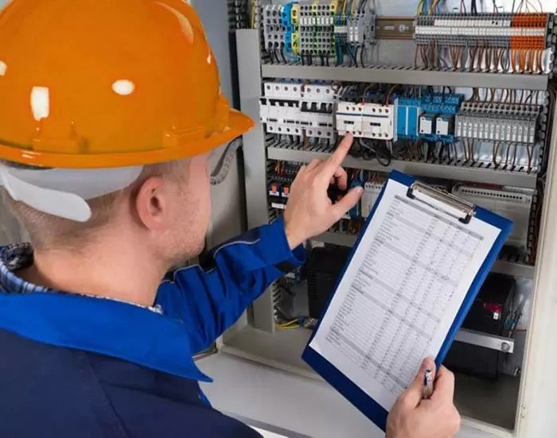
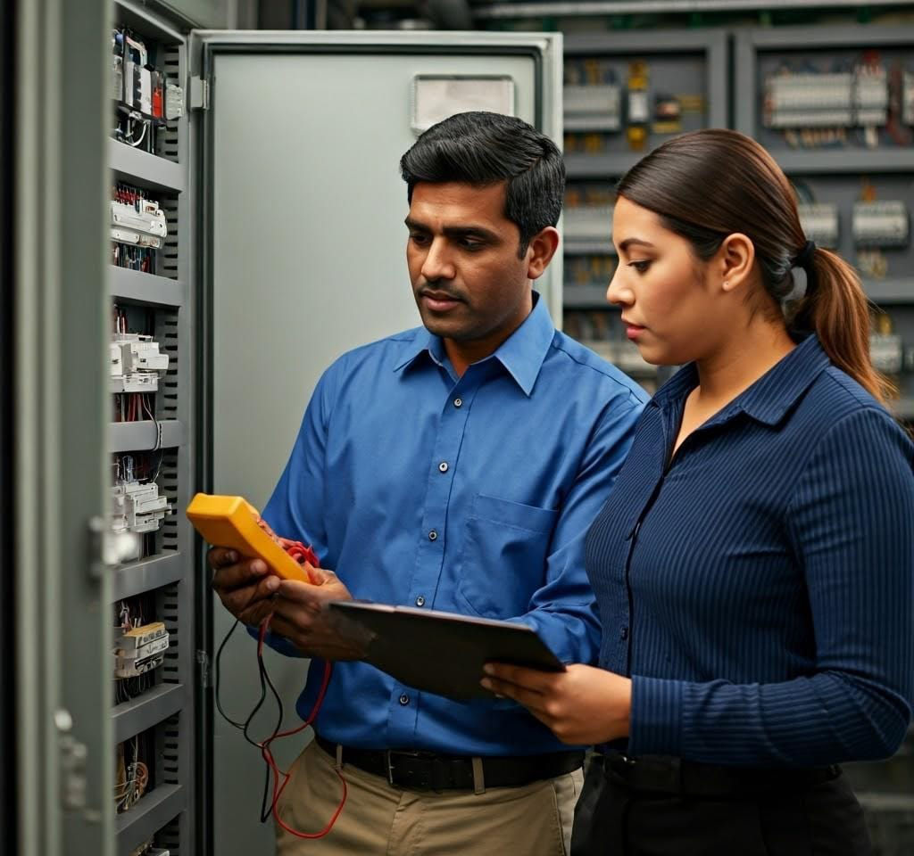
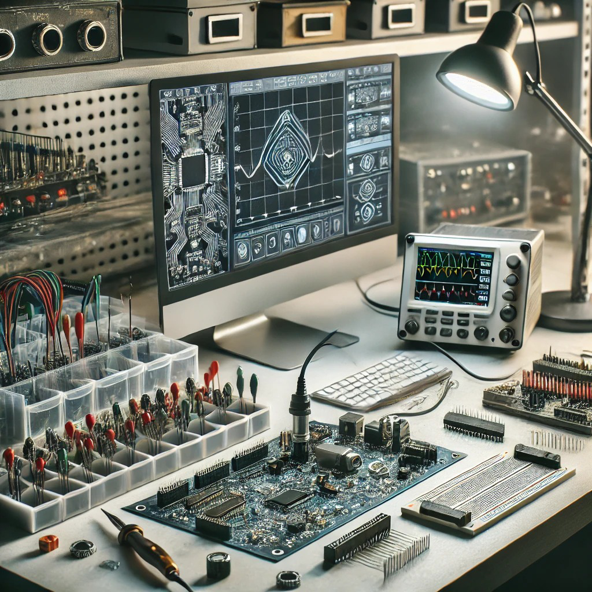
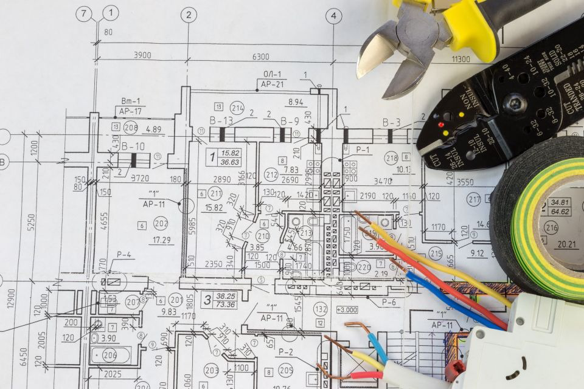

TECH
ENGENHARIA INTEGRADA
Soluções inteligentes em Engenharia para um futuro eficiente.
Nossos Serviços
- Projetos Elétricos
- Projetos Eltrônicos
- Treinamentos
- Laudos Elétricos
- Consultorias
João Dias Antunes Bucciano
Nazareno de Oliveira Pacheco
Contatos
(48) 99974-4662
(48) 98496-0043
QUEM SOMOS
Técnico em Eletrônica, Tecnólogo em Gestão da Produção Industrial e Pós Graduado em MBI - Educação para o Profissional do Futuro.
Atuou no setor de Ensino Profissionalizante por mais de 20 noas, empresário do setor eletroeletrônico de automação.
É Engenheiro Eletricista, com mestrado em Engenharia Elétrica e doutorado em Engenharia Mecânica.
Atua no setor de Ensino Profissionalizante a mais de 20 anos, perito elétrico atuando junto ao judiciário e empresário do setor elétrico e automação.
CONSULTORIAS
Oferecemos serviços especializados em consultoria elétrica, laudos técnicos e perícias, garantido conformidade com normas e segurança operacional. Realizamos análises de eficiência energética, avaliação de instalações, identificação de falhas e emissão de relatórios técnicos detalhados.
Nossa experiência abrange desde inspeções preventivas até suporte em disputas judiciais, assegurando soluções confiáveis para empresas, indústriais e condomínios.
LAUDOS ELÉTRICOS
Um laudo elétrico é um documento técnico que avalia a segurança e a conformidade das instalações elétricas de um imóvel, seja ele residencial, comercial ou industrial.
Imagine que ele seja um "raio-x" da parte elétrica do local, revelando se tudo está funcionando corretamente e se não há riscos de acidentes, como choques elétricos ou incêndios
TREINAMENTOS
Um treinamento técnic é um programa de capacitação focado em desenvolver habilidades práticas e conhecimentos específicos para o desempenho de tarefas técnica em um deterinado campo.
Ele combina teoria e prática, preparando profissionais para lidar com equipamentos, processos e tecnologias, garantindo segurança, eficiência e qualidade no trabalho.
PROJETOS ELETRÔNICOS
Desenvolvemos soluções personalizadas em automação, controle e sistemas elétricos, atendendo às demandas industriais, comerciais e residenciais.
Nossos projetos incluem a integração de dispositivos eletrônicos, otimização de processos, eficiência energética e conformidade com normas técnicas.
Buscamos inovação e segurança para garanti o melhor desempenho dos seus sistemas eletroeletônicos.
PROJETOS ELÉTRICOS
Transforme sua operação com soluções de retrofitting, automação de processos e acionamentos elétrocos!
Modernize seus sistemas antigos, otimize a eficiência e reduza custos operacionais sem a necessidade de substituições caras.
Nossa expertise garante a atualização de equipamentos com as mais recentes tecnologias, aumentando a produtividade e a segurança.
A automação de processos melhora o controle, a precisão e a confiabilidade de suas operações, enquanto os acionamentos elétricos proporcionanm o máximo desempenho e eficiência energética.
